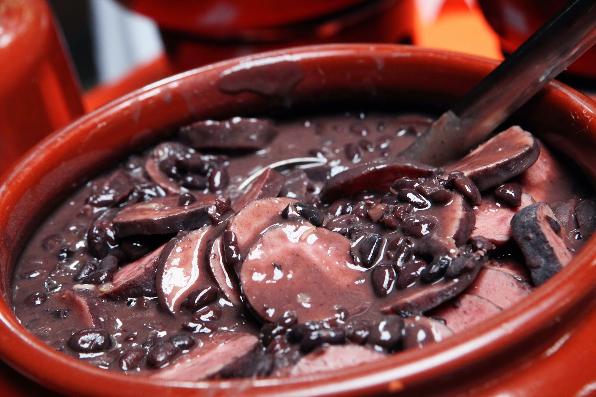

Receita 1: Feijoada
A feijoada é um prato tradicional da culinária brasileira, feito com feijão preto e carnes variadas.
A feijoada é um prato tradicional da culinária brasileira, feito com feijão preto e carnes variadas.
Uma deliciosa moqueca de peixe típica da Bahia, feita com leite de coco e dendê.